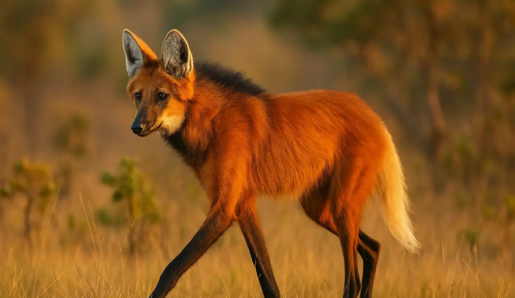
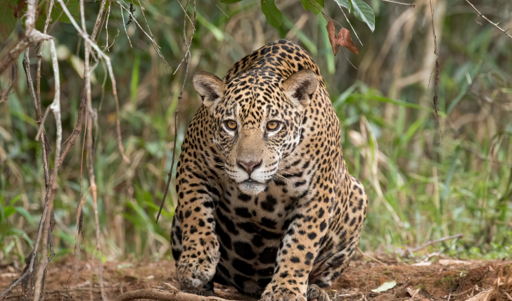
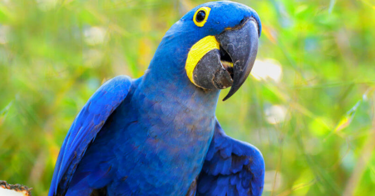
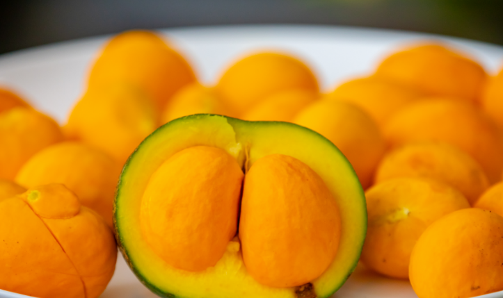
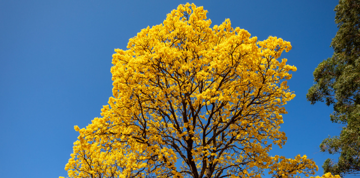
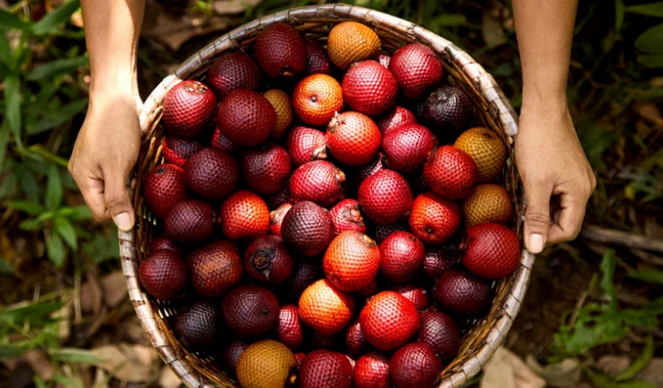
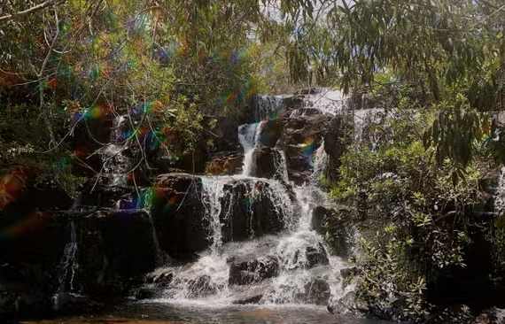
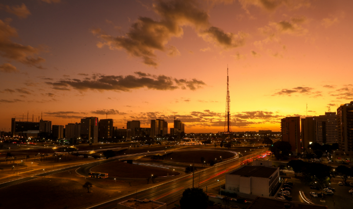
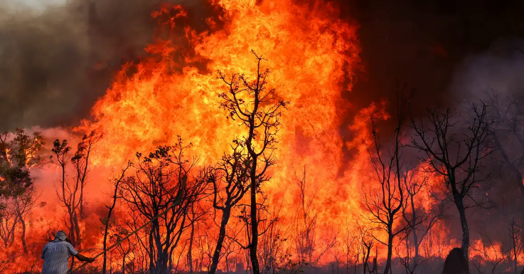

Lobo-guará
O maior canídeo da América do Sul e um dos símbolos do Cerrado. Vive em áreas abertas e se alimenta de frutos, insetos e pequenos animais.
Um guia completo sobre a fauna, a flora e a biodiversidade do Cerrado - o segundo maior bioma do país, com riquezas que você precisa conhecer.
Animais que fazem do Cerrado um dos ecossistemas mais diversos do país.

O maior canídeo da América do Sul e um dos símbolos do Cerrado. Vive em áreas abertas e se alimenta de frutos, insetos e pequenos animais.

O maior felino das Américas. Animal de hábitos solitários, presente em áreas preservadas do Cerrado.

Ave que vive nas matas de galeria do Cerrado e depende de árvores ocas, como o manduvi, para fazer seu ninho.
O Cerrado é considerado o bioma com a flora mais rica do mundo, com muitas espécies que só existem nele.
Árvores e plantas adaptadas ao clima seco e às queimadas naturais do bioma.

Fruto típico do Cerrado, muito usado na culinária regional e fonte de renda para comunidades locais.

Floresce no período seco e colore o Cerrado de amarelo, servindo de alimento para abelhas e beija-flores.

Palmeira das áreas úmidas e veredas, conhecida como árvore da vida pela importância para a fauna e para o homem.
Por que a preservação do Cerrado é importante para o Brasil inteiro.

No Cerrado nascem rios de três grandes bacias hidrográficas: São Francisco, Tocantins e Paraná.

A vegetação do Cerrado ajuda a formar os rios voadores, que levam chuva para outras regiões do país.

Desmatamento e queimadas colocam o bioma em risco. Hoje, menos de 10% da área do Cerrado é protegida por lei.
Clique em uma pergunta para ver a resposta.
O Cerrado ocupa cerca de 2 milhões de km², no Centro-Oeste e em partes do Norte, Nordeste e Sudeste — cerca de 22% do território brasileiro.
Porque é nas matas do Cerrado que nascem grandes rios como o São Francisco e o Araguaia, que abastecem várias regiões do país.
Evitando o desperdício de água, não fazendo queimadas, consumindo produtos sustentáveis e divulgando a importância do bioma.
Projeto final da disciplina de Web-Design, desenvolvido com HTML5, CSS3 e JavaScript.